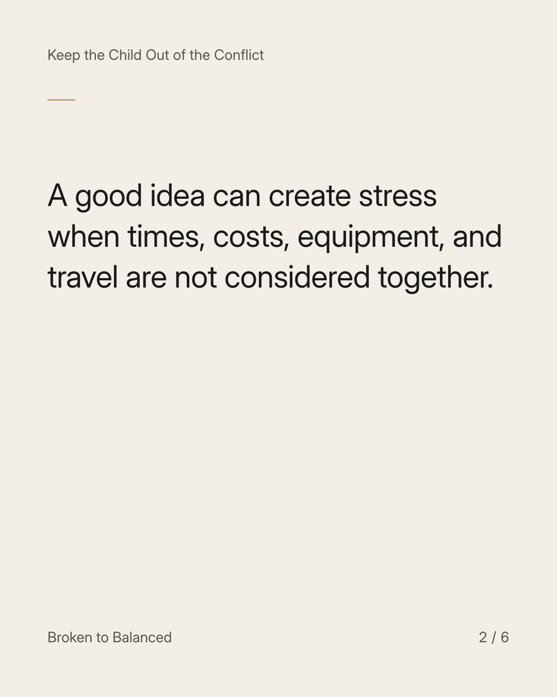
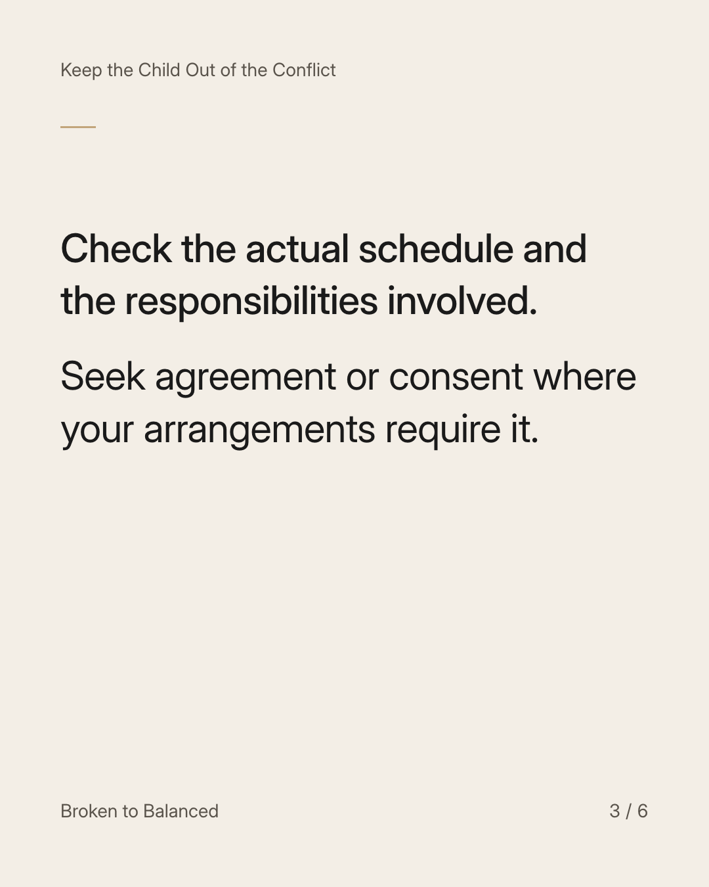
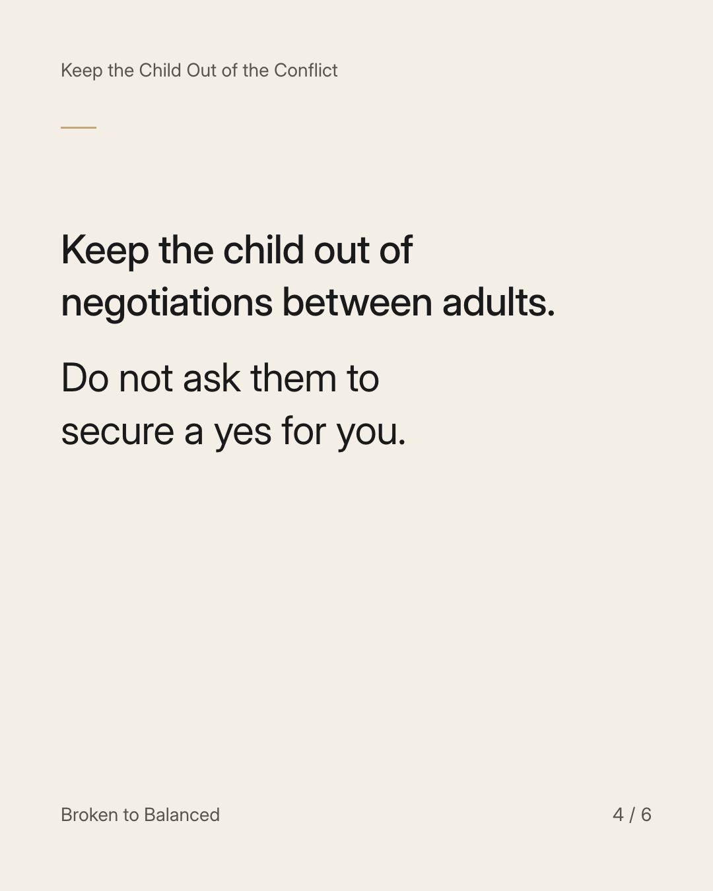
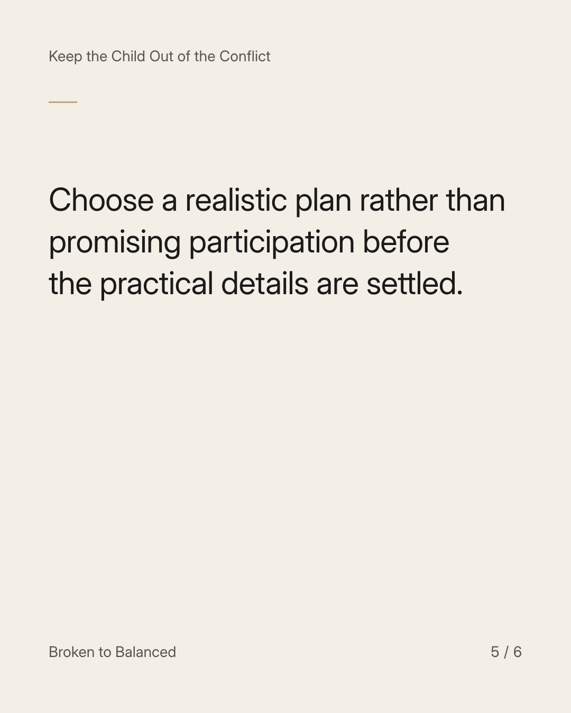
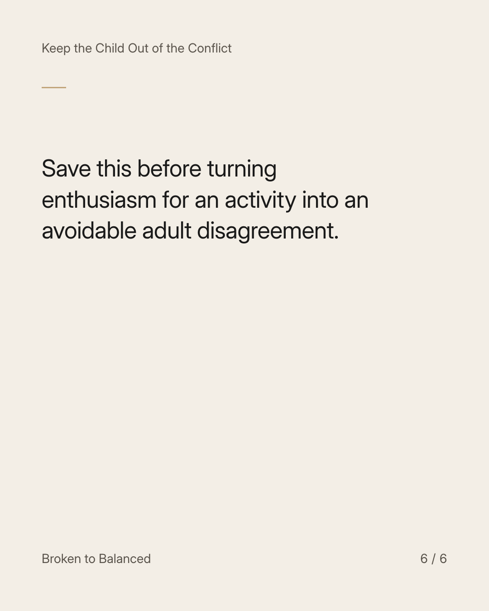

Exact text and accessibility text
A child's activity plan includes the transport, not just the registration.
Slide 1 of 6. A child's activity plan includes the transport, not just the registration.


Exact text and accessibility text
A good idea can create stress when times, costs, equipment, and travel are not considered together.
Slide 2 of 6. A good idea can create stress when times, costs, equipment, and travel are not considered together.


Exact text and accessibility text
Check the actual schedule and the responsibilities involved. Seek agreement or consent where your arrangements require it.
Slide 3 of 6. Check the actual schedule and the responsibilities involved. Seek agreement or consent where your arrangements require it.


Exact text and accessibility text
Keep the child out of negotiations between adults. Do not ask them to secure a yes for you.
Slide 4 of 6. Keep the child out of negotiations between adults. Do not ask them to secure a yes for you.


Exact text and accessibility text
Choose a realistic plan rather than promising participation before the practical details are settled.
Slide 5 of 6. Choose a realistic plan rather than promising participation before the practical details are settled.


Exact text and accessibility text
Save this before turning enthusiasm for an activity into an avoidable adult disagreement.
Slide 6 of 6. Save this before turning enthusiasm for an activity into an avoidable adult disagreement.
Exact caption
Plain-text fallback: select and copy the caption.